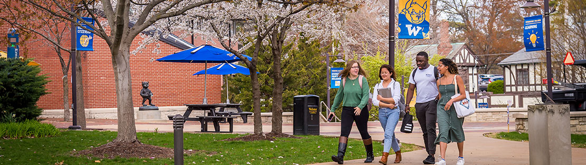
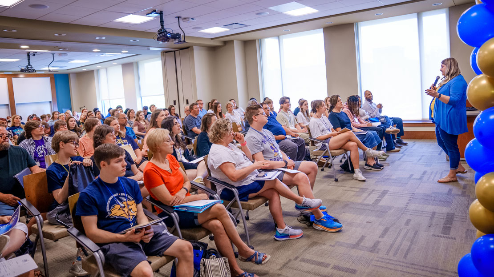

Campus Tours
Join us for an in-person or virtual campus tour to experience the vibrant life at Webster University. Learn about our programs, facilities, and community.

Sharing insights and updates from Webster University
Learn more about visiting Webster University on: Official Visit Page
Join us for an in-person or virtual campus tour to experience the vibrant life at Webster University. Learn about our programs, facilities, and community.

Attend an information session to hear directly from our admissions team and faculty. Get all your questions answered about academics, housing, and student life.
